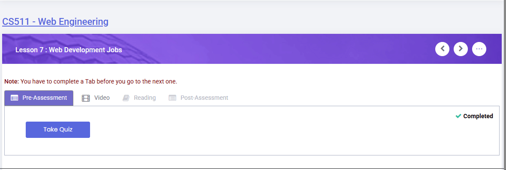
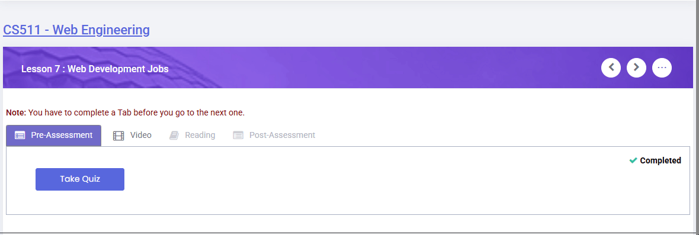
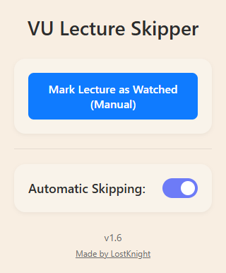
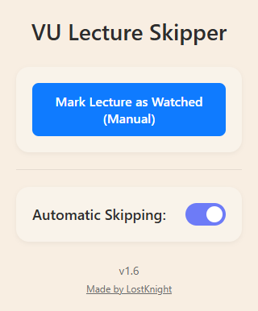
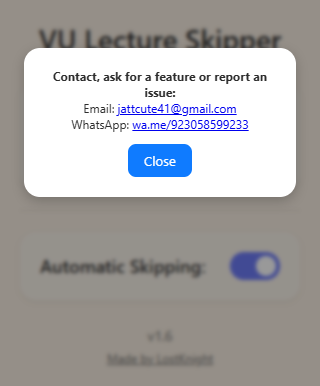
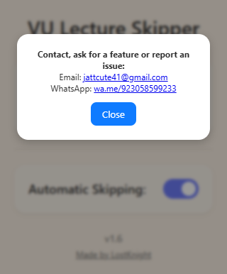

📚 VU LMS Lecture Bypass (Skipper)
“Auto-skip VU LMS lectures. Study smart, not longer.”
A lightweight browser extension that automatically marks VU LMS video lectures as watched and skips to the next one — no timers, no waiting.
🎓 Built for working students, part-time learners, and anyone who values their time.
Virtual University is designed for self-paced learning — yet students are forced to sit through long videos just to satisfy a timer.
This extension is for those who study on their own time — after work, during breaks, or whenever it suits them — and don’t want to waste hours just letting videos play.
✅ How It Works
- Open any VULMS lecture tab
- The extension marks the lecture as watched
- It automatically switches to the next lecture tab
- Install once and forget it
🔧 Installation
- Clone or download this repo:
git clone https://github.com/LostKnight-hz/VU-Lecture-Bypass-Skipper.git - Open
chrome://extensions - Enable Developer Mode → Load Unpacked → Select the folder
🔧 Installation
- Download the latest version:
- Extract the ZIP file
- Open Chrome and visit:
chrome://extensions - Enable Developer Mode (top-right corner)
- Click "Load Unpacked" and select the extracted folder
📸 Screenshots
Auto Skipping Demo


Popup UI - Main


Popup UI - Contact


💬 Contact & Credits
Made with ❤️ by LostKnight
📧 LostKnight786@gmail.com
💬 WhatsApp
📄 License
MIT License – See LICENSE for details.